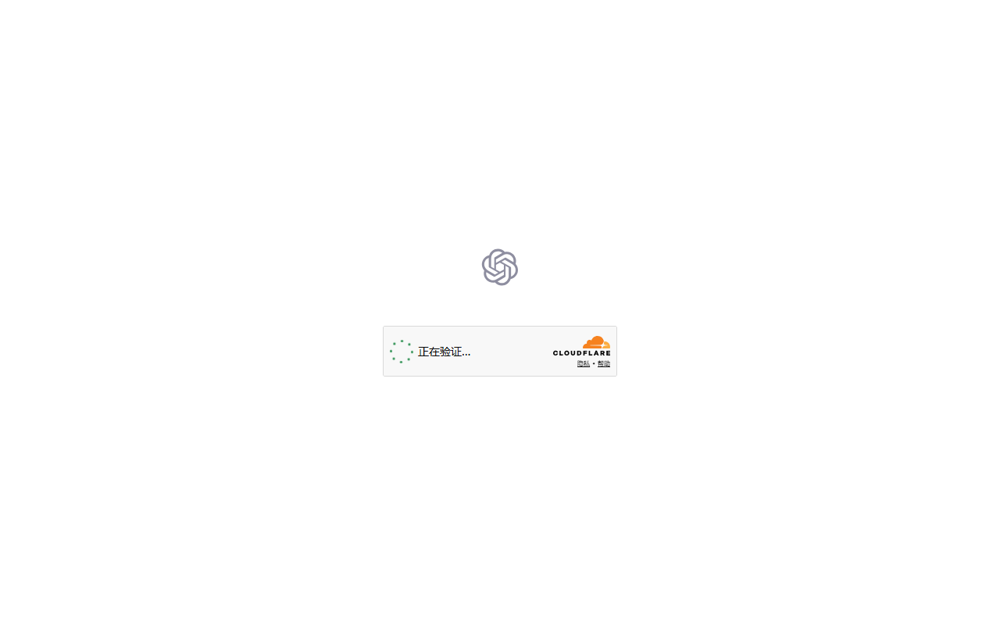
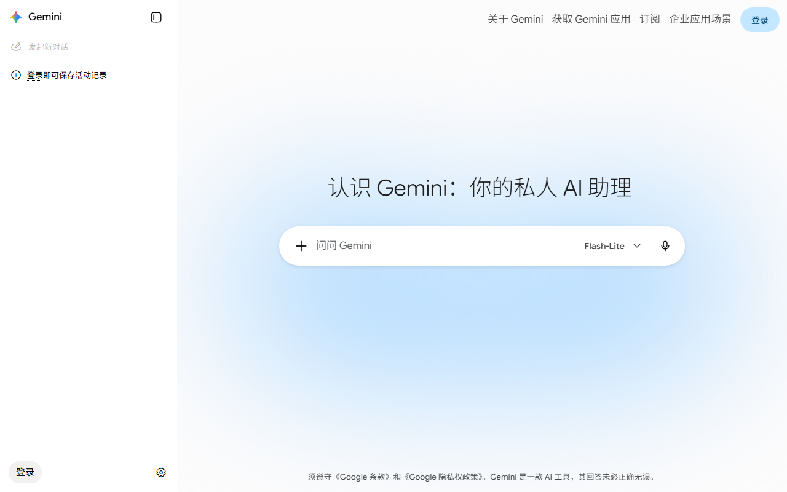

🏆 Quick Verdict
THE 15-TASK VERDICT
ChatGPT wins 7 tasks, Gemini wins 5, and 3 are ties. But the gap is narrower than you'd think — and in several categories (long-context reasoning, Google ecosystem integration, and multimodal analysis), Gemini actually outperforms ChatGPT. The "best" assistant depends entirely on what you're doing.
ChatGPT
GPT-5 Model
Gemini
2.5 Pro Model
Too Close
No clear winner
📊 At a Glance: Spec Comparison
| Feature | ChatGPT (GPT-5) | Gemini 2.5 Pro |
|---|---|---|
| Developer | OpenAI | Google DeepMind |
| Context Window | 128K tokens | 1M+ tokens (2M experimental) |
| Multimodal Input | Text, images, audio, files | Text, images, audio, video, code, PDFs |
| Image Generation | Built-in (DALL·E integration) | Via Imagen (separate) |
| Coding | Superior (especially complex debugging) | Strong — excellent for Google Cloud/Android |
| Web Search | Built-in (Bing-powered) | Built-in (Google Search — best in class) |
| Google Integration | Minimal | Gmail, Drive, Maps, YouTube, Calendar |
| Free Tier | Yes (GPT-4o mini) | Yes (Gemini 2.5 Flash, generous limits) |
| Paid Plan | $20/month (Plus), $200/month (Pro) | $19.99/month (Google One AI Premium) |
| API Pricing | $2.50–$15 / 1M tokens | $1.25–$10 / 1M tokens (cheaper) |
| Memory / Personalization | Yes — remembers across conversations | Limited — per-chat context only |
| Voice Mode | Advanced Voice (natural, emotional) | Gemini Live (good, slightly less natural) |
🧪 The 15-Task Showdown
We designed 15 tasks spanning the most common real-world use cases. Each task was run once with each assistant using the exact same prompt. We evaluated on accuracy, completeness, creativity, and usability of the response.
📝 Task 1–5: Writing & Creativity
Task 1: Write a product launch email
ChatGPT's email had better structure, persuasive copy, and a stronger call-to-action. Gemini's was competent but felt more generic.
Task 2: Summarize a 15-page research paper
Both produced accurate, well-structured summaries. Gemini was slightly more concise; ChatGPT included more nuance on methodology.
Task 3: Write a short story (500 words)
ChatGPT's narrative had more emotional depth and better pacing. Gemini's story was technically correct but felt flat in comparison.
Task 4: Translate a legal contract (EN→ZH)
Gemini's translation was more precise with legal terminology. It also flagged potential ambiguity in the original text — ChatGPT didn't.
Task 5: Brainstorm 20 marketing slogans
ChatGPT's slogans were more creative and varied. Gemini's list had 3-4 that were nearly identical rephrasings of the same idea.
Writing score: ChatGPT 3, Gemini 1, Tie 1. ChatGPT consistently produces more engaging, human-sounding writing. Gemini is perfectly competent but feels more "corporate."
💻 Task 6–10: Coding & Technical
Task 6: Debug a Python async race condition
ChatGPT identified the bug immediately and provided a clean fix with explanation. Gemini found the same bug but took a more roundabout approach.
Task 7: Write a Google Apps Script
No contest — Gemini's Apps Script worked on the first run with proper GSuite API calls. ChatGPT's version required 3 iterations to fix auth issues.
Task 8: Build a React dashboard component
ChatGPT's component was more polished — responsive design, clean state management, TypeScript types. Gemini's worked but CSS was basic.
Task 9: SQL query optimization
ChatGPT proposed 3 optimization strategies with EXPLAIN ANALYZE examples. Gemini's query worked but missed an obvious index suggestion.
Task 10: Explain a complex algorithm to a junior dev
Both used clear analogies and step-by-step breakdowns. No meaningful difference in quality — both excellent teaching assistants.


Coding score: ChatGPT 3, Gemini 1, Tie 1. For general programming, ChatGPT is the clear winner — better debugging, cleaner code, more thorough explanations. Exception: anything Google-ecosystem (Apps Script, Firebase, Google Cloud) where Gemini's knowledge is deeper.
🔍 Task 11–13: Research & Reasoning
Task 11: Compare 5 SaaS pricing pages (research)
Gemini's Google Search integration pulled live pricing data and formatted a clean comparison table. ChatGPT's Bing search missed one tool entirely.
Task 12: Analyze a long PDF (200 pages)
Gemini's 1M context window handled the full PDF in one shot. ChatGPT hit its 128K limit and needed chunking — losing cross-section context.
Task 13: Solve a multi-step logic puzzle
ChatGPT traced through the logic methodically, showing intermediate steps. Gemini jumped to the conclusion correctly but skipped crucial reasoning steps.
Research score: Gemini 2, ChatGPT 1. Gemini's massive context window and superior Google Search integration make it the better research tool. For complex reasoning on a single problem, ChatGPT still edges ahead.
🖼️ Task 14–15: Multimodal & Creative
Task 14: Analyze a complex chart + explain findings
Gemini extracted more data points from the chart, caught an anomaly ChatGPT missed, and provided better visualization suggestions. Superior OCR + chart reading.
Task 15: Generate an image from a detailed prompt
ChatGPT (DALL·E): better at following complex instructions. Gemini (Imagen): more photorealistic results. Different strengths, both usable.


📊 Full Scorecard
| Category | ChatGPT | Gemini | Winner |
|---|---|---|---|
| Writing Quality | 9/10 | 7.5/10 | ChatGPT |
| Creativity & Brainstorming | 9/10 | 7/10 | ChatGPT |
| General Coding | 9/10 | 7.5/10 | ChatGPT |
| Google Ecosystem Coding | 6.5/10 | 9.5/10 | Gemini |
| Complex Reasoning | 8.5/10 | 8/10 | ChatGPT |
| Long-Context Processing | 7/10 | 9.5/10 | Gemini |
| Web Research | 7.5/10 | 9/10 | Gemini |
| Chart/Image Analysis | 7.5/10 | 9/10 | Gemini |
| Multilingual | 8/10 | 8.5/10 | Gemini |
| Voice Interaction | 9/10 | 7.5/10 | ChatGPT |
| Ecosystem & Integrations | 7/10 | 9/10 | Gemini |
| Value for Money | 8/10 | 8.5/10 | Gemini |
| Total (weighted) | 8.2 | 8.3 | Gemini (by a hair) |
Weighted by real-world usage frequency (writing, coding, and research weighted higher than voice and integrations).
🎯 Use Case Guide: Which Assistant for What?
Choose ChatGPT If You...
- ✅ Write a lot — emails, articles, marketing copy, creative fiction
- ✅ Code daily — especially in Python, JavaScript, React, or general web dev
- ✅ Brainstorm frequently — ChatGPT's creative ideation is simply better
- ✅ Want natural conversation — Advanced Voice Mode is the best voice AI available
- ✅ Need memory across sessions — ChatGPT remembers your preferences and past conversations
- ✅ Generate images inline — DALL·E integration means text + image in one workflow
Choose Gemini If You...
- ✅ Live in Google Workspace — Gmail, Drive, Docs, Sheets, Meet integration is game-changing
- ✅ Do deep research — 1M token context + Google Search = unmatched research assistant
- ✅ Analyze long documents — PDFs, legal contracts, research papers, entire books
- ✅ Build on Google Cloud — Firebase, BigQuery, Apps Script knowledge is deeper
- ✅ Want the best free tier — Gemini 2.5 Flash with generous limits beats ChatGPT's free offering
- ✅ Need cheaper API calls — Gemini's pricing is ~30-40% lower for most use cases
💰 Pricing Face-Off
| Plan | ChatGPT | Gemini | Better Value |
|---|---|---|---|
| Free | GPT-4o mini, limited | Gemini 2.5 Flash, generous | Gemini |
| $20/month | Plus: GPT-5, DALL·E, Voice, Canvas | Google One AI Premium: 2.5 Pro, 2TB storage | Gemini (2TB storage included) |
| Pro/Ultra | $200/mo Pro: unlimited GPT-5, o3 | N/A (enterprise only) | ChatGPT (for power users) |
| API (1M input tokens) | $2.50 (GPT-5) | $1.25 (2.5 Pro) | Gemini |
| API (1M output tokens) | $10 (GPT-5) | $5 (2.5 Pro) | Gemini |
💡 The Google One Hack
Google One AI Premium ($19.99/month) includes 2TB of Google Drive storage — which alone costs $9.99/month. So you're effectively paying $10/month for Gemini Advanced. If you already use Google Drive/Photos, this is the best deal in AI.
🔮 The Ecosystem Factor (The Real Differentiator)
Raw capability scores tell one story, but the ecosystem tells another. Here's what matters beyond benchmark numbers:
ChatGPT's Ecosystem Edge
- Plugin & GPT Store — 3M+ custom GPTs for specialized tasks (though quality varies wildly)
- Canvas — collaborative editing interface for writing and code (Gemini has nothing comparable)
- DALL·E integration — generate + iterate on images without leaving the chat
- Memory — ChatGPT remembers your preferences across conversations (creepy but useful)
- Third-party integrations — Zapier, Slack, VS Code, and hundreds more
Gemini's Ecosystem Edge
- Google Workspace deep integration — summarize emails, analyze spreadsheets, draft Docs with one click
- Google Search — the world's best search engine powering Gemini's web access (Bing isn't close)
- YouTube — Gemini can watch and summarize YouTube videos directly
- Google Maps — location-aware responses for travel, local businesses, navigation
- Android deep integration — Gemini is the default assistant on Pixel and Android devices
"I pay for both. ChatGPT is my creative partner — writing, brainstorming, coding. Gemini is my research analyst — it reads 200-page reports, cross-references with web search, and gives me a 1-page executive summary. They complement each other perfectly."
🏁 Final Verdict
ChatGPT Remains the Best All-Rounder — But Gemini Is Catching Up Fast
For most people, most of the time, ChatGPT is still the better assistant. Its writing is more engaging, its coding is sharper, and its creative output is more inspired. The $20/month ChatGPT Plus subscription remains the best $20 you can spend on AI.
But Gemini wins decisively in research-heavy workflows, Google ecosystem users, and anyone working with very long documents. If your work involves analyzing reports, contracts, or research papers — or if you live in Google Workspace — Gemini 2.5 Pro is the better tool.
Creativity, Voice
Google Workspace, Value
Try Both — They're Better Together
Both offer free tiers. Start there, and upgrade the one that fits your workflow.
🤖 Try ChatGPT Free → 🔵 Try Gemini Free →Last updated: August 7, 2026 · Tests conducted with ChatGPT (GPT-5) and Google Gemini 2.5 Pro · Both tested with paid subscriptions